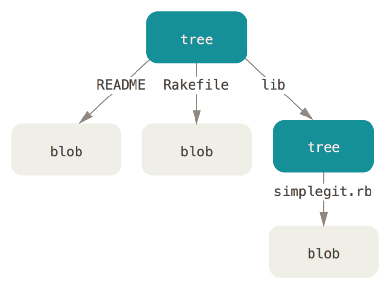

$ git init test
Initialized empty Git repository in /tmp/test/.git/
$ cd test
$ find .git/objects
.git/objects
.git/objects/info
.git/objects/pack
$ find .git/objects -type fGit 对象
Git 是一个内容寻址文件系统。
看起来很酷，
但这是什么意思呢？
这意味着，Git 的核心部分是一个简单的键值对数据库（key-value data store）。
你可以向该数据库插入任意类型的内容，它会返回一个键值，通过该键值可以在任意时刻再次检索（retrieve）该内容。
可以通过底层命令 hash-object 来演示上述效果——该命令可将任意数据保存于 .git 目录，并返回相应的键值。
首先，我们需要初始化一个新的 Git 版本库，并确认 objects 目录为空：
可以看到 Git 对 objects 目录进行了初始化，并创建了 pack 和 info 子目录，但均为空。
接着，往 Git 数据库存入一些文本：
$ echo 'test content' | git hash-object -w --stdin
d670460b4b4aece5915caf5c68d12f560a9fe3e4-w 选项指示 hash-object 命令存储数据对象；若不指定此选项，则该命令仅返回对应的键值。
--stdin 选项则指示该命令从标准输入读取内容；若不指定此选项，则须在命令尾部给出待存储文件的路径。
该命令输出一个长度为 40 个字符的校验和。
这是一个 SHA-1 哈希值——一个将待存储的数据外加一个头部信息（header）一起做 SHA-1 校验运算而得的校验和。后文会简要讨论该头部信息。
现在我们可以查看 Git 是如何存储数据的：
$ find .git/objects -type f
.git/objects/d6/70460b4b4aece5915caf5c68d12f560a9fe3e4可以在 objects 目录下看到一个文件。
这就是开始时 Git 存储内容的方式——一个文件对应一条内容，以该内容加上特定头部信息一起的 SHA-1 校验和为文件命名。
校验和的前两个字符用于命名子目录，余下的 38 个字符则用作文件名。
可以通过 cat-file 命令从 Git 那里取回数据。
这个命令简直就是一把剖析 Git 对象的瑞士军刀。
为 cat-file 指定 -p 选项可指示该命令自动判断内容的类型，并为我们显示格式友好的内容：
$ git cat-file -p d670460b4b4aece5915caf5c68d12f560a9fe3e4
test content至此，你已经掌握了如何向 Git 中存入内容，以及如何将它们取出。 我们同样可以将这些操作应用于文件中的内容。 例如，可以对一个文件进行简单的版本控制。 首先，创建一个新文件并将其内容存入数据库：
$ echo 'version 1' > test.txt
$ git hash-object -w test.txt
83baae61804e65cc73a7201a7252750c76066a30接着，向文件里写入新内容，并再次将其存入数据库：
$ echo 'version 2' > test.txt
$ git hash-object -w test.txt
1f7a7a472abf3dd9643fd615f6da379c4acb3e3a数据库记录下了该文件的两个不同版本，当然之前我们存入的第一条内容也还在：
$ find .git/objects -type f
.git/objects/1f/7a7a472abf3dd9643fd615f6da379c4acb3e3a
.git/objects/83/baae61804e65cc73a7201a7252750c76066a30
.git/objects/d6/70460b4b4aece5915caf5c68d12f560a9fe3e4现在可以把文件内容恢复到第一个版本：
$ git cat-file -p 83baae61804e65cc73a7201a7252750c76066a30 > test.txt
$ cat test.txt
version 1或者第二个版本：
$ git cat-file -p 1f7a7a472abf3dd9643fd615f6da379c4acb3e3a > test.txt
$ cat test.txt
version 2然而，记住文件的每一个版本所对应的 SHA-1 值并不现实；另一个问题是，在这个（简单的版本控制）系统中，文件名并没有被保存——我们仅保存了文件的内容。
上述类型的对象我们称之为数据对象（blob object）。
利用 cat-file -t 命令，可以让 Git 告诉我们其内部存储的任何对象类型，只要给定该对象的 SHA-1 值：
$ git cat-file -t 1f7a7a472abf3dd9643fd615f6da379c4acb3e3a
blob树对象
接下来要探讨的对象类型是树对象（tree object），它能解决文件名保存的问题，也允许我们将多个文件组织到一起。 Git 以一种类似于 UNIX 文件系统的方式存储内容，但作了些许简化。 所有内容均以树对象和数据对象的形式存储，其中树对象对应了 UNIX 中的目录项，数据对象则大致上对应了 inodes 或文件内容。 一个树对象包含了一条或多条树对象记录（tree entry），每条记录含有一个指向数据对象或者子树对象的 SHA-1 指针，以及相应的模式、类型、文件名信息。 例如，某项目当前对应的最新树对象可能是这样的：
$ git cat-file -p master^{tree}
100644 blob a906cb2a4a904a152e80877d4088654daad0c859 README
100644 blob 8f94139338f9404f26296befa88755fc2598c289 Rakefile
040000 tree 99f1a6d12cb4b6f19c8655fca46c3ecf317074e0 libmaster^{tree} 语法表示 master 分支上最新的提交所指向的树对象。
请注意，lib 子目录（所对应的那条树对象记录）并不是一个数据对象，而是一个指针，其指向的是另一个树对象：
$ git cat-file -p 99f1a6d12cb4b6f19c8655fca46c3ecf317074e0
100644 blob 47c6340d6459e05787f644c2447d2595f5d3a54b simplegit.rb从概念上讲，Git 内部存储的数据有点像这样：

Figure 1. 简化版的 Git 数据模型。
你可以轻松创建自己的树对象。
通常，Git 根据某一时刻暂存区（即 index 区域，下同）所表示的状态创建并记录一个对应的树对象，如此重复便可依次记录（某个时间段内）一系列的树对象。
因此，为创建一个树对象，首先需要通过暂存一些文件来创建一个暂存区。
可以通过底层命令 update-index 为一个单独文件——我们的 test.txt 文件的首个版本——创建一个暂存区。
利用该命令，可以把 test.txt 文件的首个版本人为地加入一个新的暂存区。
必须为上述命令指定 --add 选项，因为此前该文件并不在暂存区中（我们甚至都还没来得及创建一个暂存区呢）；同样必需的还有 --cacheinfo 选项，因为将要添加的文件位于 Git 数据库中，而不是位于当前目录下。
同时，需要指定文件模式、SHA-1 与文件名：
$ git update-index --add --cacheinfo 100644 \
83baae61804e65cc73a7201a7252750c76066a30 test.txt本例中，我们指定的文件模式为 100644，表明这是一个普通文件。
其他选择包括：100755，表示一个可执行文件；120000，表示一个符号链接。
这里的文件模式参考了常见的 UNIX 文件模式，但远没那么灵活——上述三种模式即是 Git 文件（即数据对象）的所有合法模式（当然，还有其他一些模式，但用于目录项和子模块）。
现在，可以通过 write-tree 命令将暂存区内容写入一个树对象。
此处无需指定 -w 选项——如果某个树对象此前并不存在的话，当调用 write-tree 命令时，它会根据当前暂存区状态自动创建一个新的树对象：
$ git write-tree
d8329fc1cc938780ffdd9f94e0d364e0ea74f579
$ git cat-file -p d8329fc1cc938780ffdd9f94e0d364e0ea74f579
100644 blob 83baae61804e65cc73a7201a7252750c76066a30 test.txt不妨验证一下它确实是一个树对象：
$ git cat-file -t d8329fc1cc938780ffdd9f94e0d364e0ea74f579
tree接着我们来创建一个新的树对象，它包括 test.txt 文件的第二个版本，以及一个新的文件：
$ echo 'new file' > new.txt
$ git update-index test.txt
$ git update-index --add new.txt暂存区现在包含了 test.txt 文件的新版本，和一个新文件：new.txt。 记录下这个目录树（将当前暂存区的状态记录为一个树对象），然后观察它的结构：
$ git write-tree
0155eb4229851634a0f03eb265b69f5a2d56f341
$ git cat-file -p 0155eb4229851634a0f03eb265b69f5a2d56f341
100644 blob fa49b077972391ad58037050f2a75f74e3671e92 new.txt
100644 blob 1f7a7a472abf3dd9643fd615f6da379c4acb3e3a test.txt我们注意到，新的树对象包含两条文件记录，同时 test.txt 的 SHA-1 值（1f7a7a）是先前值的“第二版”。
只是为了好玩：你可以将第一个树对象加入第二个树对象，使其成为新的树对象的一个子目录。
通过调用 read-tree 命令，可以把树对象读入暂存区。
本例中，可以通过对 read-tree 指定 --prefix 选项，将一个已有的树对象作为子树读入暂存区：
$ git read-tree --prefix=bak d8329fc1cc938780ffdd9f94e0d364e0ea74f579
$ git write-tree
3c4e9cd789d88d8d89c1073707c3585e41b0e614
$ git cat-file -p 3c4e9cd789d88d8d89c1073707c3585e41b0e614
040000 tree d8329fc1cc938780ffdd9f94e0d364e0ea74f579 bak
100644 blob fa49b077972391ad58037050f2a75f74e3671e92 new.txt
100644 blob 1f7a7a472abf3dd9643fd615f6da379c4acb3e3a test.txt如果基于这个新的树对象创建一个工作目录，你会发现工作目录的根目录包含两个文件以及一个名为 bak 的子目录，该子目录包含 test.txt 文件的第一个版本。
可以认为 Git 内部存储着的用于表示上述结构的数据是这样的：

Figure 2. 当前 Git 的数据内容结构。
提交对象
现在有三个树对象，分别代表了我们想要跟踪的不同项目快照。然而问题依旧：若想重用这些快照，你必须记住所有三个 SHA-1 哈希值。 并且，你也完全不知道是谁保存了这些快照，在什么时刻保存的，以及为什么保存这些快照。 而以上这些，正是提交对象（commit object）能为你保存的基本信息。
可以通过调用 commit-tree 命令创建一个提交对象，为此需要指定一个树对象的 SHA-1 值，以及该提交的父提交对象（如果有的话）。
我们从之前创建的第一个树对象开始：
$ echo 'first commit' | git commit-tree d8329f
fdf4fc3344e67ab068f836878b6c4951e3b15f3d现在可以通过 cat-file 命令查看这个新提交对象：
$ git cat-file -p fdf4fc3
tree d8329fc1cc938780ffdd9f94e0d364e0ea74f579
author Scott Chacon <schacon@gmail.com> 1243040974 -0700
committer Scott Chacon <schacon@gmail.com> 1243040974 -0700
first commit提交对象的格式很简单：它先指定一个顶层树对象，代表当前项目快照；然后是作者/提交者信息（依据你的 user.name 和 user.email 配置来设定，外加一个时间戳）；留空一行，最后是提交注释。
接着，我们将创建另两个提交对象，它们分别引用各自的上一个提交（作为其父提交对象）：
$ echo 'second commit' | git commit-tree 0155eb -p fdf4fc3
cac0cab538b970a37ea1e769cbbde608743bc96d
$ echo 'third commit' | git commit-tree 3c4e9c -p cac0cab
1a410efbd13591db07496601ebc7a059dd55cfe9这三个提交对象分别指向之前创建的三个树对象快照中的一个。
现在，如果对最后一个提交的 SHA-1 值运行 git log 命令，会出乎意料的发现，你已有一个货真价实的、可由 git log 查看的 Git 提交历史了：
$ git log --stat 1a410e
commit 1a410efbd13591db07496601ebc7a059dd55cfe9
Author: Scott Chacon <schacon@gmail.com>
Date: Fri May 22 18:15:24 2009 -0700
third commit
bak/test.txt | 1 +
1 file changed, 1 insertion(+)
commit cac0cab538b970a37ea1e769cbbde608743bc96d
Author: Scott Chacon <schacon@gmail.com>
Date: Fri May 22 18:14:29 2009 -0700
second commit
new.txt | 1 +
test.txt | 2 +-
2 files changed, 2 insertions(+), 1 deletion(-)
commit fdf4fc3344e67ab068f836878b6c4951e3b15f3d
Author: Scott Chacon <schacon@gmail.com>
Date: Fri May 22 18:09:34 2009 -0700
first commit
test.txt | 1 +
1 file changed, 1 insertion(+)太神奇了：
就在刚才，你没有借助任何上层命令，仅凭几个底层操作便完成了一个 Git 提交历史的创建。
这就是每次我们运行 git add 和 git commit 命令时， Git 所做的实质工作——将被改写的文件保存为数据对象，更新暂存区，记录树对象，最后创建一个指明了顶层树对象和父提交的提交对象。
这三种主要的 Git 对象——数据对象、树对象、提交对象——最初均以单独文件的形式保存在 .git/objects 目录下。
下面列出了目前示例目录内的所有对象，辅以各自所保存内容的注释：
$ find .git/objects -type f
.git/objects/01/55eb4229851634a0f03eb265b69f5a2d56f341 # tree 2
.git/objects/1a/410efbd13591db07496601ebc7a059dd55cfe9 # commit 3
.git/objects/1f/7a7a472abf3dd9643fd615f6da379c4acb3e3a # test.txt v2
.git/objects/3c/4e9cd789d88d8d89c1073707c3585e41b0e614 # tree 3
.git/objects/83/baae61804e65cc73a7201a7252750c76066a30 # test.txt v1
.git/objects/ca/c0cab538b970a37ea1e769cbbde608743bc96d # commit 2
.git/objects/d6/70460b4b4aece5915caf5c68d12f560a9fe3e4 # 'test content'
.git/objects/d8/329fc1cc938780ffdd9f94e0d364e0ea74f579 # tree 1
.git/objects/fa/49b077972391ad58037050f2a75f74e3671e92 # new.txt
.git/objects/fd/f4fc3344e67ab068f836878b6c4951e3b15f3d # commit 1如果跟踪所有的内部指针，将得到一个类似下面的对象关系图：

Figure 3. 你的 Git 目录下的所有对象。
对象存储
前文曾提及，在存储内容时，会有个头部信息一并被保存。 让我们略花些时间来看看 Git 是如何存储其对象的。 通过在 Ruby 脚本语言中交互式地演示，你将看到一个数据对象——本例中是字符串“what is up, doc?”——是如何被存储的。
可以通过 irb 命令启动 Ruby 的交互模式：
$ irb
>> content = "what is up, doc?"
=> "what is up, doc?"Git 以对象类型作为开头来构造一个头部信息，本例中是一个“blob”字符串。 接着 Git 会添加一个空格，随后是数据内容的长度，最后是一个空字节（null byte）：
>> header = "blob #{content.length}\0"
=> "blob 16\u0000"Git 会将上述头部信息和原始数据拼接起来，并计算出这条新内容的 SHA-1 校验和。
在 Ruby 中可以这样计算 SHA-1 值——先通过 require 命令导入 SHA-1 digest 库，然后对目标字符串调用 Digest::SHA1.hexdigest()：
>> store = header + content
=> "blob 16\u0000what is up, doc?"
>> require 'digest/sha1'
=> true
>> sha1 = Digest::SHA1.hexdigest(store)
=> "bd9dbf5aae1a3862dd1526723246b20206e5fc37"Git 会通过 zlib 压缩这条新内容。在 Ruby 中可以借助 zlib 库做到这一点。
先导入相应的库，然后对目标内容调用 Zlib::Deflate.deflate()：
>> require 'zlib'
=> true
>> zlib_content = Zlib::Deflate.deflate(store)
=> "x\x9CK\xCA\xC9OR04c(\xCFH,Q\xC8,V(-\xD0QH\xC9O\xB6\a\x00_\x1C\a\x9D"最后，需要将这条经由 zlib 压缩的内容写入磁盘上的某个对象。
要先确定待写入对象的路径（SHA-1 值的前两个字符作为子目录名称，后 38 个字符则作为子目录内文件的名称）。
如果该子目录不存在，可以通过 Ruby 中的 FileUtils.mkdir_p() 函数来创建它。
接着，通过 File.open() 打开这个文件。最后，对上一步中得到的文件句柄调用 write() 函数，以向目标文件写入之前那条 zlib 压缩过的内容：
>> path = '.git/objects/' + sha1[0,2] + '/' + sha1[2,38]
=> ".git/objects/bd/9dbf5aae1a3862dd1526723246b20206e5fc37"
>> require 'fileutils'
=> true
>> FileUtils.mkdir_p(File.dirname(path))
=> ".git/objects/bd"
>> File.open(path, 'w') { |f| f.write zlib_content }
=> 32就是这样——你已创建了一个有效的 Git 数据对象。 所有的 Git 对象均以这种方式存储，区别仅在于类型标识——另两种对象类型的头部信息以字符串“commit”或“tree”开头，而不是“blob”。 另外，虽然数据对象的内容几乎可以是任何东西，但提交对象和树对象的内容却有各自固定的格式。